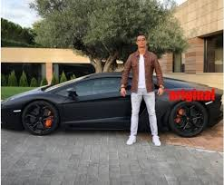
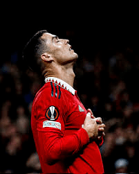

Perfil del Jugador


(segunda etapa)
Cristiano Ronaldo dos Santos Aveiro (Funchal, Madeira; 5 de febrero de 1985), conocido como Cristiano Ronaldo, es un futbolista portugués que juega como delantero o extremo. Jugador histórico, estuvo ligado a diversos equipos importantes antes de integrar desde 2021 el plantel del Manchester United Football Club de la Premier League de Inglaterra. Es también internacional con la selección de Portugal, equipo del que es capitán y máximo goleador histórico. Considerado con frecuencia el mejor y más completo futbolista y goleador del mundo y uno de los mejores de todos los tiempos, es uno de los futbolistas más laureados de la historia, habiendo ganado, entre otras distinciones, cinco veces el Balón de Oro, cinco premios de la FIFA al mejor jugador del mundo y cuatro Botas de Oro.
| Club | Partidos | Goles | Asistencias | Media Goleadora |
| Sporting de Portugal |
31 | 5 | 7 | 0,16 |
| Manchester United |
292 | 118 | 61 | 0,4 |
| Real Madrid |
438 | 450 | 120 | 1,03 |
| Juventus |
134 | 101 | 19 | 0,75 |
| Manchester United (segunda etapa) |
54 | 27 | 5 | 0,5 |
Su red social favorita, en la que es la persona con más seguidores del mundo es Instagram. Véase su perfil.
Otra página web que le gusta consultar es el diario Marca en el que se informa de los resultados de los equipos de fútbol españoles.
Le apasiona el mundo del motor, y le gusta sorprender al mundo con sus nuevas adquisiciones automovilísticas,como este Lamborghini.
También le encanta pasar el día en la piscina relajándose y en verano aprovecha para irse con su yate a aguas mallorquinas.
Por último, también le gusta mucho dormir y descansar después de los grandes esfuerzos que hace entrenando.
Títulos competiciones nacionales (20)
España: 2 Ligas, 2 Supercopas y 2 Copas del Rey.
Inglaterra: 3 Premier Leagues, 1 FA cup, 2 Community Shields y 2 Copas de la Liga.
Italia: 2 Serie A, 2 Supercopas y 1 Coppa Italia.
Portugal: 1 Supercopa.
Títulos competiciones internacionales de clubes (12)
5 Champions Leagues.
4 Mundiales de clubes.
3 Supercopas de Europa.
Títulos competiciones internacionales de selecciones (2)
1 Eurocopa.
1 Nations League.